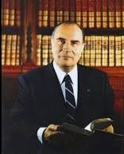

Haut de page
Haut de page
Les années 1980 furent une période de changement sociaux et politiques.
En effet, dès 1981, le premier Président du parti de gauche arrive au pouvoir : François Mitterand. 
Dès son arrivée au pouvoir, le 18 septembre 1981 grâce à la loi Badinter, il abolit la peine de mort en France. La France devient alors le 29e pays à l'avoir aboli.
De plus, il instaure la 5e semaine de congés payés ainsi que l'abaissement de la durée légale du travail à 39h par semaine, ce qui permet alors d'augmenter les conditions de vie des français. Ayant plus de vacances, la population peut se permettre d'avoir plus de loisirs, et donc le développement des services de divertissement comme le cinéma ou les émissions télévisées. Il supprime aussi les sélections d'entrées aux universités, permettant ainsi à plus de jeunes d'avoir accès à l'enseignement supérieur.
Début 80, une autre grande mesure : la libéralisation de la radio et de la télévision. Le 9 novembre 1981, la loi autorise les radios locales à émettre sur la bande FM. C'est la fin du monopole de l'Etat. La fin du brouillage systématique des radios pirates par la TDF, la télédiffusion française. Un moment historique pour les ex-pirates des ondes qui peuvent sortir de la clandestinité, comme la toute première, Radio Campus Lille créée en 1969, Radio Ivre ou encore NRJ. D'autres naissent. C'est le cas de Radio Nova et de la sulfureuse Carbone 14.
Dans l'effervescence de la libéralisation, près de 2000 radios sont recensées à peine un an après la loi. La plupart ont disparu quelques années plus tard.
La cohabitation de François Mitterand
Durant l'année 1986, la droite a obtenu la majorité à l'Assemblée nationale, pour cela François Mitterand, président de la république nomme Jacques Chirac au poste de premier ministre. Chirac et Mitterand sont tous les deux de partis politiques différents, cela entraîne la première cohabitation de l'Etat français dans l'histoire de la Vème République. La cohabitation a deux effets, le président n'a plus autant de pouvoir exécutif et obtient un rôle plus symbolique alors que le premier ministre devient le chef de l'exécutif.
Les années 80 voient aussi l’apparition de mouvements et associations caritatives comme les Restos du Coeur fondés en France par l’humoriste Coluche en 1986, ou encore d'autres associations dans le monde ... Ce désir d’aider et de mieux vivre ensemble est aussi mis en avant avec la création d’associations comme SOS Racisme ou Touche Pas à mon Pote qui prônent l’acceptation d’autrui quelque soit sa religion ou sa couleur de peau. Dans les années 80, un véritable art de vivre ensemble a ainsi pris forme : la tolérance était le maître-mot de cette génération.
Le début de cette décennie est encore marquée par la Guerre Froide. En 1983, le président américain Ronald Reagan lance son pays dans le projet « guerre des étoiles » : les deux blocs Est et Ouest s’opposant toujours , il propose aux Etats-Unis un moyen de protection révolutionnaire ( défendre son pays de l’espace ! ). Les idéologies sont poussées à leur paroxysme : aux JO de Los Angeles, l’URSS décide le boycott. Les films à grands budget comme Rocky et Rambo mettent en avant la guerre entre le monde occidental et le bloc soviétique. A partir de 1989 s’amorce la fin de la Guerre Froide avec la chute progressive du rideau de fer. La chute du mur de Berlin en novembre 1989 va réellement marquer le début du déclin des pays sous domination soviétique. Un nouveau monde naît.
Durant la Guerre Froide, les Jeux olympiques sont un outil de propagande. Leur utilisation politique culmine en 1980 lorsque les États occidentaux boycottent les Jeux olympiques de Moscou en protestation contre l'invasion de l'Afghanistan. Quatre ans plus tard, les Soviétiques boycottent les Jeux olympiques de Los Angeles, malgré la grande importance qu'ils attachent depuis leur retour en 1952 aux compétitions olympiques à engranger un nombre record de médailles et à médiatiser leurs héros sportifs. Le boycoot des J.O. à L.A. furent médiatisés dans le monde, ce qui permet de marquer les mentalités.
A droite, statue de Lénine démontée, déposée au palais de Mogoșoaia (Roumanie) : à sa place se dresse aujourd'hui le monument à la Résistance anticommuniste roumaine.
Cependant,il y a aussi eu de grandes catastrophes, qui ont choqué la société.
La catastrophe de Tchernobyl, ayant fait 130 morts est la plus grosse catastrophe de cette décennie. Effectivement, le 26 avril 1986 à 01h23, le réacteur n°4 a explosé, laissant alors le coeur du réacteur à ciel ouvert libérer les radiations. Les réacteurs voisins furent arrêtés jusqu'à la fin de l'année, le temps d'une décontamination. La catastrophe, médiatisée dans toute l'Europe fût suivie par tous. Des tensions apparaissent sur la véritable dangerosité du nuage, les effets sur la santé, la réaction de l'URSS face à la catastrophe,... En France, par exemple, la population se pose des questions sur le nuage, car des salades sont jugées contaminées en Allemange mais pas en France (au niveau de la frontière) ou encore sur le passage du nuage : "le nuage radioactif s'est arrêté à la frontière"
Il y a aussi eu une autre catastrophe : l'explosion de la navette Challenger. Le 28 janvier 1986, la navette et ses sept membres d’équipage devaient positionner en orbite un satellite de communication. Cependant, 73sec la navette explose en direct. La cause de cette tragédie est un joint mal positionné qui laisse du carburant s'échapper, provoquant ainsi une flamme lors de l'allumage des propulseurs. Cet accident marque la fin de l'exploration spatiale, car seules quelques missions ont lieu après 1986.
Néanmoins, cette période a connu de meilleurs évènements dans le monde. La création d'associations comme par exemple USA for Africa, permettent de venir en aide au continent africain. Il s'agit d'un collectif de chanteurs américains de 1985. La famine en Ethiopie connaît un grand mouvement humanitaire : A la fin de l'année 1984, sous le coup de l'émotion internationale suscitée par les images de famine en Ethiopie, les humanitaires interviennent en masse et participent à leur insu au déplacement forcé des victimes. L'aide humanitaire est détournée par le gouvernement éthiopien pour mener à bien une politique d'homogénéisation démographique. Les réfugiés sont kidnappés et emmenés de force dans les régions du Sud. 200 000 personnes meurent au cours de ces déplacements tandis que le monde s'attendrit de sa propre générosité en chantant "We are the world" ( écrit par : Michael Jackson et Lionel Ritchie).